Les problèmes rencontrés
1. Extraire un mot du fichier
Avant
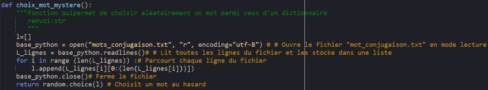Après
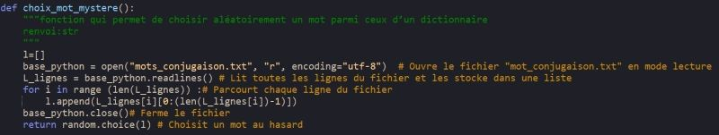2. L'utilisation des fonctions "isalpha" et "set"
isalpha Avant
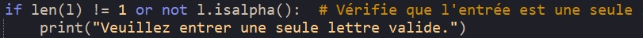isalpha Après
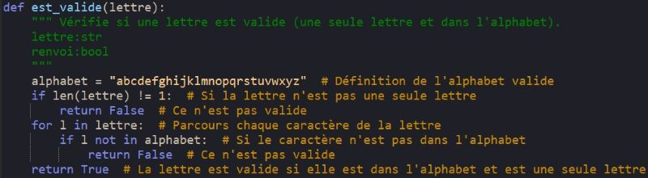set Avant
set Après
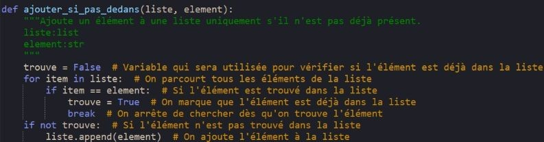3. L'interaction humain/machine
 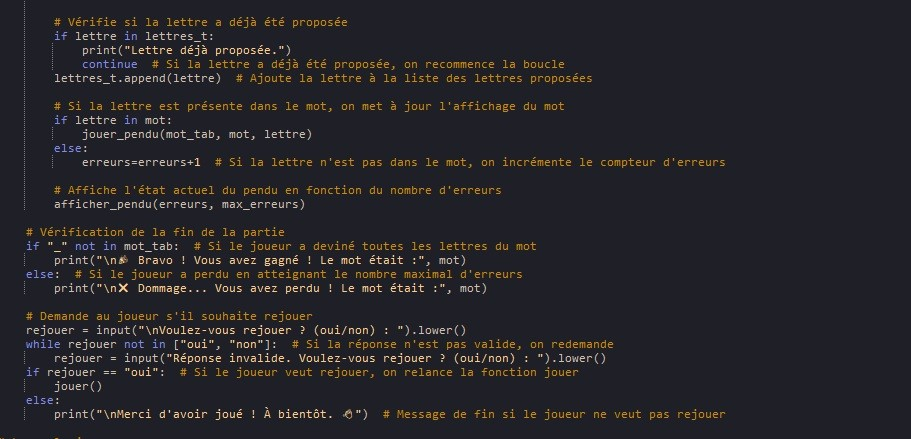
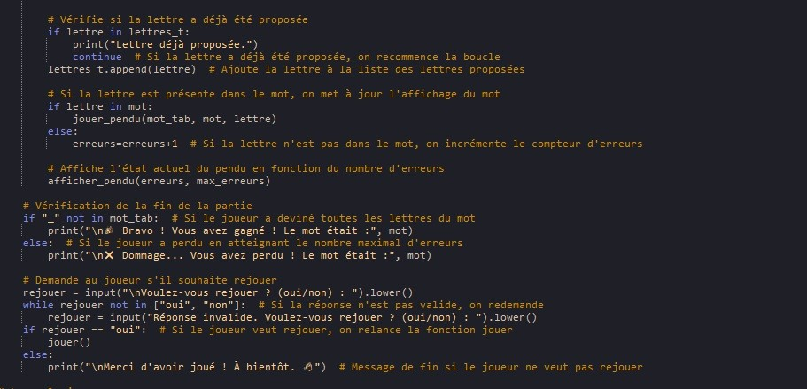
Page Précédente |
Page Suivante |
Les problèmes rencontrés1. Extraire un mot du fichierAvant 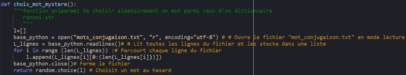Après 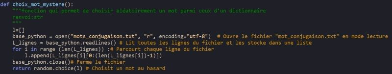 |
|
2. L'utilisation des fonctions "isalpha" et "set"isalpha Avant 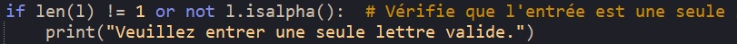isalpha Après 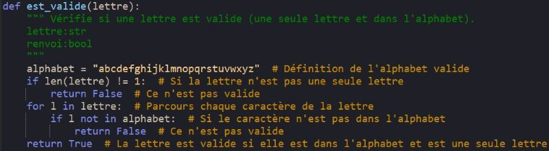set Avant set Après 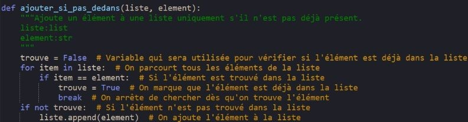 |
|
3. L'interaction humain/machine
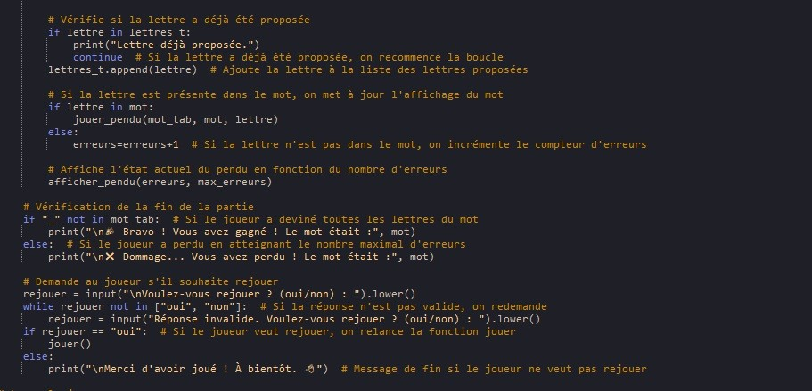
|
Da Silva Thomas, Benarezki Yani |